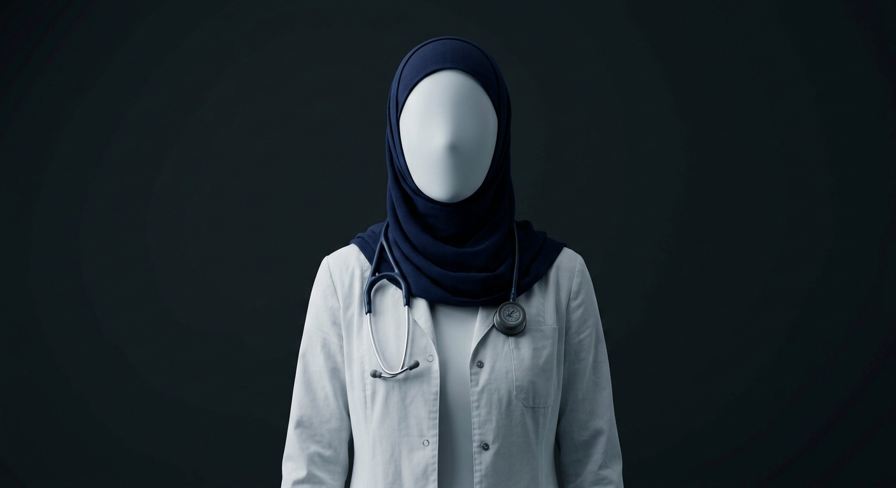

Наши Врачи
Выберите специалиста, чтобы увидеть подробную информацию

Главный педиатр-нутрициолог Интегративный ЛОР врач
Интегративный ЛОР врач
Ахметжанова Гульбану Капасовна
⏱️ Стаж: 40 лет
📞 +7 (705) 329-54-14
Нажмите, чтобы открыть профиль →
 Врач-кардиолог (УЗИ сердца)
Врач-кардиолог (УЗИ сердца)
Калкышбаева Мадина Алдабергеновна
⏱️ Стаж: 20 лет
📞 +7 (705) 329-54-14
Нажмите, чтобы открыть профиль →
 Акушер-гинеколог / УЗИ
Акушер-гинеколог / УЗИ
 Лучший УЗИст сердца
Лучший УЗИст сердца
Алдыбергенова Малика Талгатовна
⏱️ Стаж: 6 лет
📞 +7 (705) 329-54-14
Нажмите, чтобы открыть профиль →
Почему родители и пациенты выбирают нас
Безопасное лечение
Используем только современные протоколы доказательной медицины без лишних назначений.
Детская нутрициология
Подбор правильного рациона, коррекция питания для младенцев и часто болеющих детей.
Выезд на дом
Возможность вызвать педиатра на дом при высокой температуре и недомогании ребенка.